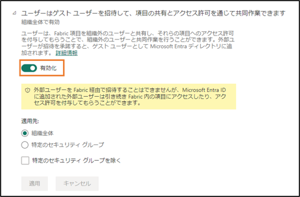

こんにちは、Power BI サポート チームです。
Power BI ご利用のユーザー様から、「組織外のユーザーはPower BI のレポートを共有できますか？制限する方法はありますか？」などの質問をよく頂いていますが、
本ブログでは、組織外のユーザーを招待し、組織内のゲストユーザーとしてコンテンツを共有する方法、及び権限を制御する方法につきまして、ご紹介いたします。
重要
本記事は弊社公式ドキュメントの公開情報を元に構成しておりますが、
本記事編集時点と実際の機能に相違がある場合がございます。
最新情報につきましては、参考情報として記載しておりますドキュメントをご確認ください。
目次
組織外のユーザーとは？
組織外のユーザー（または外部ユーザー）とは、ご利用のAzure Active Directory（AAD）テナントのドメイン以外のユーザーを指します。
具体的には、メールアドレスの@ マーク後の表記が異なるユーザーです。
gmail.com、outlook.com、hotmail.com などの個人用メールアカウントのユーザーにつきましても、組織外のユーザーと見なします。
組織外のユーザーと、Power BI内のレポートを共有するには、組織外のユーザーをゲストユーザーとして招待する必要があります。
組織外のユーザーをゲストユーザーとして招待するには
ゲストユーザーとして招待するには、計画的招待とアドホック招待という二つの方法があります。
■ 計画的招待
Azure Active Directory（AAD）からゲストユーザーを招待する方法です。
まず、Azureポータル へアクセスし、Azure Active Directoryを選択します。
次に、Azure Active Directoryで、[ユーザー]>[＋新しいゲストユーザー]の順で選択し、ゲストユーザーのメールアドレスを入力し、招待メールを送信します。
招待されたユーザーは、下記画像のようなメールが届きますので、メールに記載されているリンクをクリックし、指示に従いアカウントの有効化を行なってください。
ヒント
Azure Active Directory （AAD）側でゲストユーザーを招待できるユーザーを制限することも可能ですので、その詳細については下記のドキュメントをご参考ください。
■ アドホック招待
レポートやダッシュボードの共有機能、またはアプリ発行のアクセスページで、AADに存在しない組織外のユーザーを招待する方法です。
レポートの直接アクセスから追加する方法には、レポートの[アクセス許可の管理]にアクセスし、
直接アクセスで、[+ユーザーの追加]を行ない、組織外のユーザーのメールアドレスを入力すると、招待メールが対象のユーザーに届きます。
また、招待されたユーザーは、保留のリストで表示されます。
レポートからの招待の場合は、下記のような招待メールが届きますが、リンクからアカウントを作成したら、直接アクセスの一覧に表示されるようになります。
ヒント
管理ポータルで、テナント設定「組織への外部ユーザーの招待」を無効化することによって、アドホック招待を使用できないように設定することができます。
参考情報
ゲストユーザーとコンテンツを共有するには
計画的招待で、ゲストユーザーとして招待されたユーザーは、ワークスペースのアクセス許可、レポートやダッシュボード、アプリのアクセス許可でも追加できるようになります。
また、アドホック招待を通してアカウントを作成したゲストユーザーも、招待元のレポート・ダッシュボード・アプリを閲覧できる上に、計画的招待のゲストユーザーと同様、他のレポートやダッシュボード、アプリのアクセス許可にも追加されることが可能です。
ただし、ゲストユーザーがコンテンツを閲覧するには、以下のライセンス条件が必要です。
- ゲストユーザーにPower BI Pro ライセンスまたはPremium Per User ライセンスの付与
- Premium Per Capacity のワークスペースで、ゲストユーザーにPower BI Free ライセンス、ProライセンスまたはPremium Per User ライセンスの付与
（Freeライセンスは招待メールからアカウント作成すると、付与されます。） - ゲストユーザーが本来所属しているテナントで、Power BI Pro ライセンスまたはPremium Per User ライセンスを所持している
また、対象のゲストユーザーが、コンテンツを編集・作成・管理できるようになるには、Power BI Pro ライセンスまたはPremium Per User ライセンスを所持する上で、管理ポータルのテナント設定で、「Azure Active Directory のゲスト ユーザーによる組織内のコンテンツの編集および管理を許可する」を有効化しておく必要があります。
こちらのテナント設定は、既定値では、無効となっています。
しがしながら、通常のユーザーと異なり、コンテンツを編集・作成・管理できるようになったとしても、ゲストユーザーには一部利用できない機能があります。
詳細につきましては、下記参考情報のドキュメントに記載されている、「考慮事項と制限事項」の内容をご確認ください。
参考情報
ゲストユーザーの権限を制御するには
管理ポータルのテナント設定で、ゲストユーザーがPower BIサービスのテナントへアクセスできないようにすることや、アドホック招待を無効化にすることができます。
■ Azure Active Directory のゲスト ユーザーによる Power BI へのアクセスを許可する
既定値は有効化されていますが、この設定を無効にすると、Power BI サービスにアクセスしようとしたときに、ゲストユーザーにエラーが表示されます。
■ 組織への外部ユーザーの招待
既定値は有効化されていますが、この設定を無効にすると、アドホック招待でレポートやダッシュボード、アプリから組織外のユーザーを招待することができません。
ただし、計画的招待、Azure Active Directoryでゲストユーザーを招待することは引き続き可能です。

ヒント
計画的招待－Azure Active Directory （AAD）側でゲストユーザーを招待できるユーザーを制限することも可能ですので、その詳細については下記のドキュメントをご参考ください。
■ Azure Active Directory のゲスト ユーザーによる組織内のコンテンツの編集および管理を許可する
既定値では無効となっていますが、この設定を有効にすると、適切なライセンスを持つゲストユーザーは、組織内のコンテンツを編集および管理できます。
また、左側のワークスペースの一覧タブも利用できるようになります。
参考情報
以上、本ブログが少しでも皆様のお役に立てますと幸いでございます。
本ブログの関連記事
※本情報の内容（添付文書、リンク先などを含む）は、作成日時点でのものであり、予告なく変更される場合があります。